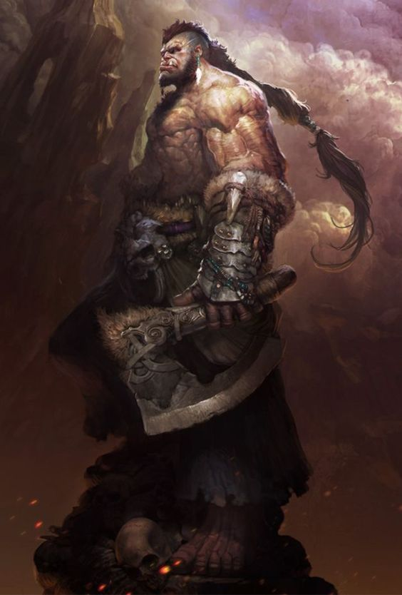

Bob
Armağan Özcan ZİYADE tarafından canlandırılmış ve oynanmıştır. Armağan'ın ikinci karakteridir. Bob Escar Ormanları'nda Daffru kabilesinde doğmuş ve büyümüş bir yarı Orc'tur. Babası kabilesinden hangi avcı olduğu bilinmese de bir avcıdır, annesi ise Escar Ormanları girişindeki civar köylerden kaçırılmış bir insandır. Rızasız bir ilişkinin sonunu oluşmuş bir üründür. Orcların üremek için insan veya diğer ırkların kadınlarını kaçırdıkları durumda, bu rızasız girilen ilişkiler silsilesinden ötürü çocukların spesifik olarak kimden olduğu seçilemeyeceğinden ötürü, ilişki sırasında orada bulunan bütün erkek orclar, orada doğan bütün çocukların hepsinin babaları sayılır. Bob da, kabilenin avcılarının sırası geldiğinde ilişkiye girdiklerin kadınlardan birinin ürünüdür. Kabilesinin Totem öğretilerini benimsemiş ve aynı kim olduğunu kişi olarak tanımadığı babası gibi bir avcı olarak yetiştirilmiştir. Bir gün Bob yeterince büyüdükten sonra, kabilesinin ona ve onun yaşıtlarına verdiği bir av niteliğinde görev ile, üremesi için bir kadın kaçırma ile görevlendirildi, böyleye erkekliğini kanıtlayacaktı. Fakat Escar Ormanları civarlarındaki köylerden birine saldırdıkları vakitte, Bob'un ismini bilmediği, fakat ismi Yeminli Alev olan gezgin bir Paladin Grubu'nun o köye yapılan baskına yetişmesi yüzünden Orclar katledilmiş, yaşayanlar ise esir olarak alınmıştı. Bob kendisi gibi birkaç yaşıtı ile birlikte esir düşmüştü ve bu şekilde Beyaz Şehir'in yolunu tuttular. Uzun bir yol boyunca esir şeklinde yolculuk etmek ve evinden koparılmak zorunda kalmış Bob, ortak lisanda bile konuşmasını bilmiyordu. Yol boyunca hayatının o anına kadar en acınası dönemlerini yaşamıştı. Bu hayatı sorguladığı ve esirliğin neye benzediğini yaşadığı uzun yolculuğun sonunda Beyaz Şehir'e gelmişti. Köye yaptıkları baskın sırasında, kendini bir savaşçı olarak öne çıkardığı için Bob'u Beyaz Şehir Büyük Arenası'na bir Gladyatör olarak sattılar. Hayatının bu döneminden sonrasını köle olarak geçireceği, satılması ile kesinleşmişti...
Bütün İmparatorluk'ta ve özellikle Beyaz Şehir'de Yeşil Derili Irklar, yakalandıkları veya esir düştükleri vakitte köle statüsünde kullanılırlar çoğu durumda. Kölelik legaldir ve en yaygın kullanılan köle çeşitlerinden birisi de orclardır. Köleler, özellikle angarya işlerde ve tehlikeli durumlarda kullanılırlardı. Lakin Bob'un hayatı tehlikede olsa da, kendini kanıtlamayı başarırsa özgürlüğüne kavuşabileceği bir yol vardı önünde. Bob hayatının çok büyük bir kısmını bu arenada özgürlüğünü elde etmeyi deneyerek geçirdi. Büyük Arena'nın kuralları gereğince bir gladyatör köle; en az 15 maç duello, 10 maç hayatta kalma savaşı, 5 maç yaratık dövüşü, 2 maç playoff ve en sonunda Arena Şampiyonu ile yapılan dövüşlerin hepsini kazanırsa, o zaman özgürlük hakkını kazanır. Bob da bu yol ile özgür kalmayı kafasına koymuştu, başka bir seçeneği de yoktu... Zaman içerisinde müsabakalara katıldı ve yıllar içinde hem ortak lisanı hem de diğer bazı dilleri öğrendi. Arena'da hızlı yükselen bir figür olarak dikkat çekiyordu, savaş kaybetmiyor ve favori olmamasına karşın rakiplerini alt etmeyi başarıyordu. Arenada kaldığı yıllar boyunca, vücut olarak da gelişmeye ve büyümeye devam etmişti, bir insana nazaran devasa boyutlara ulaşmıştı. Bazı noktalarda soylular ve zenginler, eğlence olması açısından onun önüne engel koyuyor ve silahsız bir şekilde yaratıklara karşı çıkartıyorlardı, fakat Bob beklenmedik bir şekilde, en üst düzey hayatta kalma içgüdüsüyle her savaştan galip ayrılıyordu. Yıllar geçti, Bob yaşlandı ve 30 zafer kazandı, bu şekilde Halk'ın Sesi oylamasına çıkmaya hak kazandı. Zenginler ve soylular Bob'u sevmiyordu, onlara çok para kaybettirmişti, lakin farklı olmasından kaynaklanarak avam halk onu sempatik buluyor ve seviyordu. Halkın oylamasında büyülü bir ölçüm ile, Halk'ın oyunun %83'ünü aldı ve Özgürlük Turnuvası'na girmeye hak kazandı. Bob'un namı yürüyordu, insanlar onu seviyor ve destekliyordu. İmparatorluğun sesinin ulaşabildiği bütün diyarlara haber yayılıyordu. Turnuva günü, Imparator 1. Vsag'ın doğacak oğlu olan Shaun Du Couteau'nun doğumundan sonraki 40. gün olarak belirlenmişti. Bu süreçte bu turnuvaya bütün diyardan inanılmaz bir ilgi yağıyor, şenlik hazırlıklarına başlanıyordu.
Bob bu süreçte, Veteran Gladyatör abileri ile çalışıyor ve formunun en üst seviyesine çıkmak için bütün imkanları sonuna kadar zorluyordu. Hayatı boyunca esir düştüğü bu konumdan kurtulabilmesi için yenmesi gereken sadece birkaç savaş kalmıştı. Turnuva günü gelip çattığında ise, kendini gibi yükselmeye hak kazanmış elit gladyatörler ile dövüşmüş ve bu savaşları çok zor da olsa kazanmayı başarmıştır. Final müsabakasında ise Arena Şampiyonu Julius Bellator Magnus Invictus ile karşılaşmıştır. Julius, Bob'un şu zamana kadar karşılaştığı en zorlu rakipti ve normal bir insan değildi. İnanılmaz bir fırlatma gücüne sahipti, çok uzun mesafelere kadar ağ ve kendi özel silahı olan Trident'ini fırlayabiliyordu. Bob'un hiçbir rakibi onunla temiz dövüşmemişti şu ana kadar, Bob da temiz bir şekilde savaşmazdı, ama bu Julius denen adam çıtayı farklı bir seviyeye çıkarıyordu. Hem Bob'u rezil ediyor hem de seyircileri eğlendiriyordu. Bu savaşta Bob, kabilesinin öğretileri olan Totem Güçlerini uyandırmıştı, ve savaş oldukça uzun sürmüştü, fakat Bob ne kadar iyi bir iş çıkarmış olsa da, Julius'un merhametine kalmış bir biçimde dövüşü kaybetmişti. Julius, Bob'u öldürmeyi değecek birisi olarak bulmadı ve onun canını bağışladı. Bob'un şu zamana kadar çabalayıp uğraştığı süreç boşa gitmişti, her şeyi en baştan yapmak zorundaydı. Bob büyük bir çaresizliğe kapılmıştı, Bob'un hayatı onun için anlamını yitirmişti. Fakat arka alana doğru giderken kalabalığın arasından birisi, Bob'un dövüş yeteneklerini takdir etmişti, ve onun özgürlüğe kavuşmak isteyip istemediğini sormuştu. Bu adam, Demir El'in 1. Tümen Lideri Lorenzo'ydu. Demir El, diyarda gezgin bir şekilde dolaşan, bilinen en büyük paralı asker oluşumuydu. Sayıları marjinal olarak çoktur. Paralı askerlerin en prestlijli grubunun 1. Tümen Lideri, Bob ile konuşuyordu. Bob özgürlüğünü kazanamasa da kendini kanıtlamıştı. Bob'un bu bok çukurundan çıkabilmesi için belki de son şansıydı bu. Son bir umut ile kendini toparlayarak, Lorenzo'ya Özgür kalmak istediğini söylemişti. Lorenzo, hala bir köle olacağını fakat Demir El içerisinde özgür bir birey olabileceğini Bob'a anlatmış ve onu satın alabileceğini söylemişti. Bob, Demir El'e katılmayı kabul etmişti, daha sonrasında ise Lorenzo Arena'nın Magister'ı ile görüşmüş ve okkalı bir fiyattan Bob'u satın almıştı. Bob'un hayatı Demir El'e katılması ile birlikte değişmiş, ve belli bir ölçüde özgürleşmişti.
Bob 5 yıl boyunca çeşitli görevlere giderek Demir El'in hiyerarşinde belirli bir noktaya kadar tırmanayı başarmış ve Örgüt içerisinde tanınır bir asker konumuna gelmiştir. Lorenzo'nun Rapier teknikleri, Bob'a oldum olası ters düşse de, Komutanın gücünü azımsamayan Bob, bu teknikteki zerafetten gelen gücü hep öğrenmek istemiş ve boş vakitlerinde Lorenzo'dan eğitim almıştır. Yıllar boyunca bu eğitim ile, arenada olduğundan daha da güçlü bir savaşçı haline gelmiştir. Yıllar boyunca çıktığı çeşitli görevlerden belirli miktarda bir prestij kazandığı için, spesifik bir görev için özel seçilmiştir. Bu seferki görevin müşterisi oldukça prestijli ve zengin bir insandı. Corado Vanelli adındaki bu adam Zonthar'ın Valisiydi ve özel koruma niteliğinde belirli bir süre boyunca çeşitli görevlerde kullanacağı prestlijli 13 adam arıyordu. Vali'ye gönderilen rapordaki seçimlerine dayanarak Vali, Bob'u bizzat kendi koruması olarak seçmişti, ve diğer seçilenler ile birlikte toplamda 13 kişi Zonthar'a gittiler. Zonthar ilginç bir durumu arkasında bırakmış, Tanrıların Huzurunda Dövüş ile Yargılanma sürecinden geçilmiş, bir Warlock ölmüş, bir diğeri ise Ruven adıyla dışarıda bir suçlu olarak geziyordu. Demir El askerleri kendi içlerinde bölüklere ayrıldılar, Bob ise onlardan ayrı bir biçimde Vali'nin özel korumalığını yapıyor ve daha sonrasında Carpe Diem olarak bilinecek o grubu araştırıyor, onların güvenini kazanmaya çalışıyordu. Onlarla yakın bağlar kurdu, ve Ruven hakkında bilgiler öğrendi. Ruven kasabanın dışında kalıyordu ama grup bile onun nerede olduğunu bilmiyordu. Ruven ve grup hakkında daha fazla bilgi almak için onlar ile zaman geçirmeye devam ettiği müddette, Bob çok büyük bir hata yaptı. Görev bilincini bir kenara bırakıp rehavete kapıldığı bir anda, Björn Daynore ve Damian bile Zonthar'ın genelevleri sokağına giderler. Herkes zevkine göre bir kadın bulup onunla birlikte olurken Bob da bu eğlenceden mahrem kalmamıştır, fakat ilişki sırasında içgüdülerine hakim olamayarak, ilişkiye girdiği hayat kadınının omurgasını kırarak onu istemeden ilişki esnasında öldürmüştür. Bob inanılmaz bir panik içerisine kapılmış ve bir katil konumuna düşmüş, ayrıca grubun eline bir koz vermiştir. Fakat Daynore ve Damian, onu gambazlamamış tam aksine bunu her daim bir sır olarak saklamıştır. Bu noktadan sonra Bob, Daynore ve Damian ile gerçekten bir arkadaşlık bağı kurmaya başlamıştır. Görevi neticesinde ise Ruven'i hala yakalaması lazımdı, ve Ruven'i bulduğu bir noktada onu yakaladı ve onu Vali'nin yanına götürdü. Fakat Daynore ile yürüttüğü dostane ilişkiden dolayı, onun sözüne itimat etti ve Daynore'nin de onunla gelmesine izin verdi. Vali'nin orada işler grup için iyi gitmedi ve Ruven'in sunduğu argümanlar, onun suçlu olmadığını kanıtlamıyordu, bu yüzden Vali'nin emriyle Ruven'i halka kapalı olacak şekilde infaz ettiler. Bu karar Daynore'nin hiç hoşuna gitmemişti. Bob da bu emri uygulayamamış, tereddüt etmiştir, infazı Vali'nin Sol Kolu Brad gerçekleştirmiştir.
İnfaz'ın ardından Bob, Vali'nin emirlerini sorgulamaya başlamıştır ve Daynore'ye haksızlık yaptığını düşünmeye başlamıştır. Zonthar'da sorunlar baş göstermeye devam ediyor ve bir goblin baskını kapıda gibi gözüküyordu. Goblin Kuşatması gelip çattığında ise Daynore ve diğer Carpe Diem üyeleri ile birlikte, yanlarına Armani adındaki büyücüyü de alarak, bu goblin kuşatmasını def etmeyi başarmışlardır. Bu kuşatmada Bob, Daynore'nin çok değer verdiği bir kadın olan Maara adındaki Efsungar'ın bir meslektaşı olan Syds adındaki bir kadınla tanışmıştır. Bu erkeksi figürlere sahip kadın ile birlikte romantik anlar yaşamış güzel anılar paylaşmışlardır.
Bob
Bob
Bob
Bob ismi, İmparatorluk tarafından tanınmıştır. Imparatorluk tarafından kendisine "Kahraman" ünvanı verilmiştir. İmparatorluk Bob'u diğer kölelere örnek olsun diye, tarihinde ilk defa bir köleyi Tanrı Anıtları'na kazıtmıştır. Bob'un ismi arkadaşlarının en altına kazınmıştır. Gururlu, Imparatorluğa fayda sağlamış ve ihtiyaç duyulduğunda imdada yetişmiş bir kahraman olarak nitelendirilmektedir. Bütün kölelerin, eğer yeterince çalışırslarsa, bir gün onun gibi olabileceğini gösteren bir silüet haline gelmiştir. Köle olmasına rağmen, seveni ve saygı duyanı olacak şekilde hatırlanacaktır...